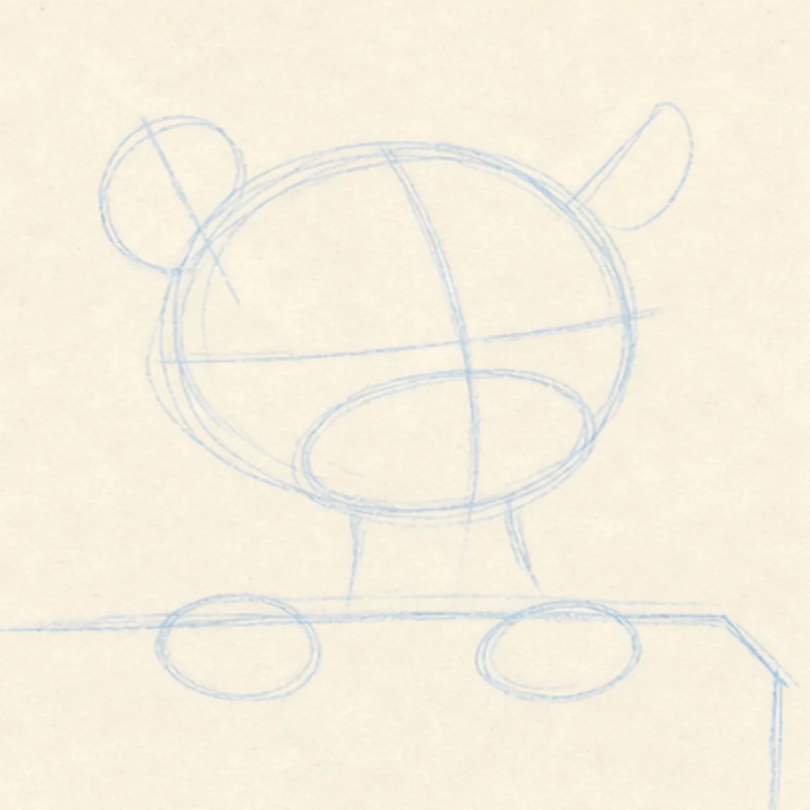
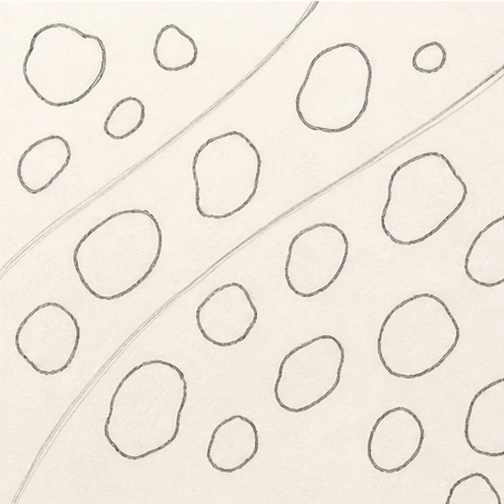
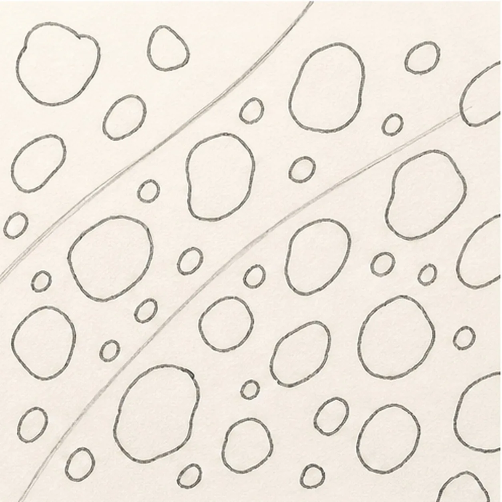
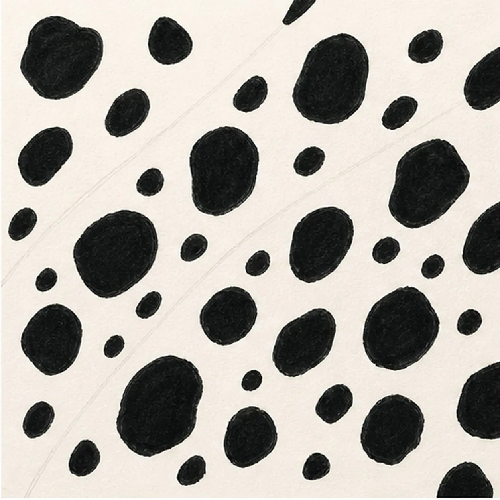
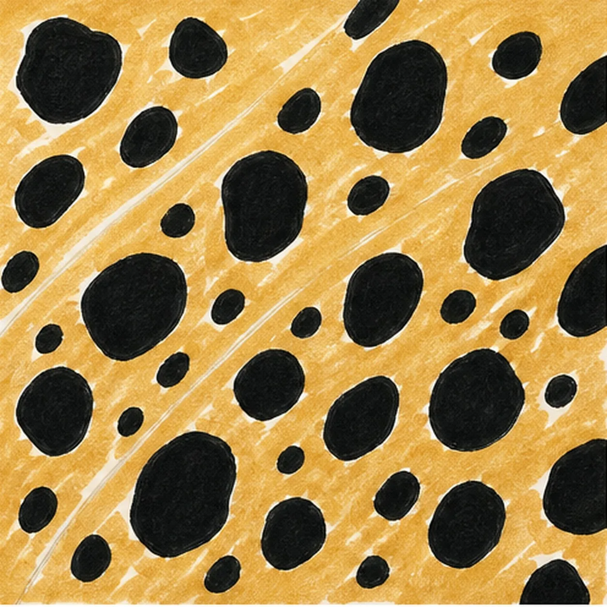
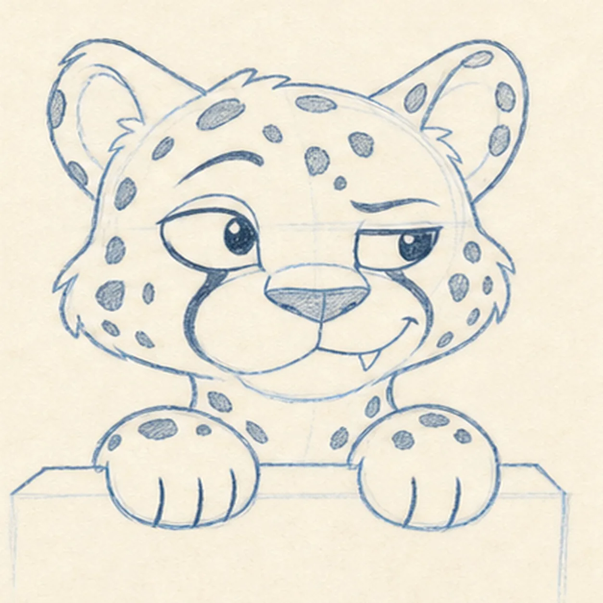
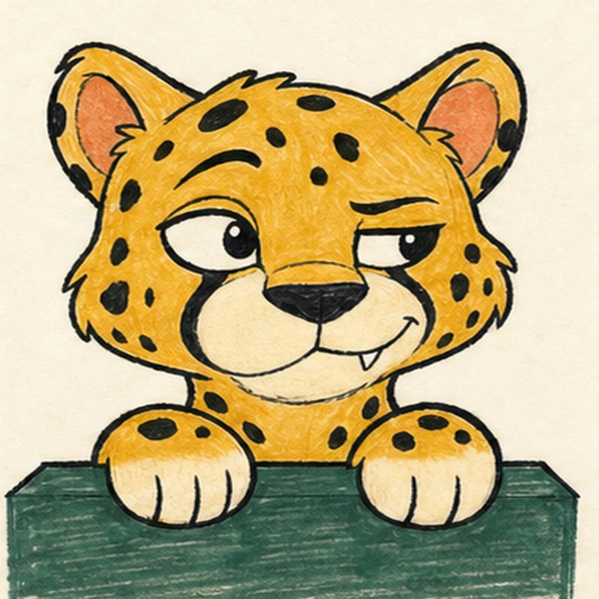

Felt-tip marker mode
Let's draw a cartoon cheetah cub
Treat this as one playful practice round: sketch the idea loosely, simplify the shapes, then commit with confident marker outlines and bright fills.
-
01

Stage the cub's peek
Draw one pale tilted head oval with a face axis, two ear axes, and a broad muzzle footprint, then place one horizontal ledge with front-plane depth and reserve exactly two paw centers on its top edge.
Marker tip: Ghost the head oval twice before touching down, then compare the two paper gaps beside it. Keep the ledge top line pale and stop it where each paw will overlap so you never have to erase a finished edge.
-
02

Build the head and paws
Wrap the guides with a rounded head and cheek block, two uneven rounded-triangle ears, one broad muzzle oval, a short visible neck, and two mitten-like forepaws draped over the ledge.
Marker tip: Make one ear tilt a little farther outward and compare the paw widths as a pair. Leave the torso below the ledge undrawn; the overlap is clearer when you only build forms that survive in the finish.
-
03

Connect the cub silhouette
Connect one loose outer contour around the head, cheeks, ears, short neck, and two paws, then clarify the ledge top and front planes without drawing through the paws.
Marker tip: Rotate the page as you pull each cheek curve, using a slightly broken felt-tip-like rhythm instead of one perfect digital arc. Check that the ledge line disappears behind both paws before adding the face.
-
04

Place the feline features
Add two inner ears, one wide almond eye opening, one narrower half-lidded eye opening, the divided muzzle, compact nose, small off-center mouth opening, and one small triangular canine. Leave both eye openings blank for now.
Marker tip: Use the face axis to keep the nose centered while letting the eye shapes disagree. Do not add irises or pupils yet—the next step sets their direction once, without redrawing them.
-
05

Aim the cheeky side-eye
Add both pupils toward the right side of the page, raise one curved brow, shape the crooked smirk, add exactly three short toe marks to each paw, and place two small solid-spot anchors on the visible neck.
Marker tip: Push both pupils toward the page's right edge before darkening them, then lift only one brow. Count three toe marks on the left paw, three on the right, and two neck anchors before moving to the full marking map.
-
06

Map the cheetah markings
Add exactly two facial tear stripes from the inner eye corners toward the muzzle, then expand the two neck anchors into an asymmetric layout of irregular closed solid spots across the forehead, cheeks, outer ears, neck, and paws.
Marker tip: Draw each spot as one closed wobbling shape with no ring or open center. Leave larger quiet gaps around the eyes and muzzle, then confirm that both tear stripes reach the muzzle without crossing the cream shapes.
-
07

Ink and color the cub
Thicken every established contour, fill the two tear stripes and all existing spots black, then add golden ochre to the fur, dusty coral to the inner ears, and muted deep green to the ledge while keeping the muzzle and paw tips cream.
Marker tip: Let the black marker dry before adding color. Pull ochre strokes with the fur direction and green strokes across the ledge plane, leaving small warm-paper gaps so the finish stays handmade instead of glossy.
-
08
![Handmade marker drawing of one cheeky near-front cartoon cheetah cub peeking over a muted deep-green ledge with exactly two rounded forepaws, three black toe lines on each cream paw tip, a golden-ochre head and visible neck, two uneven rounded ears with dusty-coral interiors, one wide almond eye and one narrower half-lidded eye glancing sideways, one raised brow, one compact black nose, a divided cream muzzle, one crooked smirk with one small triangular canine, exactly two black facial tear stripes, irregular solid black spots across the head, ears, neck, and paws, thick imperfect black outlines, visible marker strokes, and warm-paper highlight gaps; no full body, tail, rosette, scenery, text, sticker edge, or badge frame](../assets/cheetah-print-pattern-finished-v2.webp)
Sharpen the spotted mischief
Strengthen the established silhouette, asymmetric expression, two tear stripes, solid spots, six toe marks, limited marker fills, paper highlights, and small existing dry-marker shadows.
Marker tip: Count two paws, six toe marks, two tear stripes, and one canine, then stop while the marker grain still shows. You can change the cub's colors or spot rhythm in your own version without adding rosettes, a full body, scenery, or a decorative frame.
![Handmade felt-tip marker drawing of one face-free upright teal cartoon walkie-talkie leaning slightly right with one top-left antenna, exactly two coral top knobs, one attached coral push-to-talk button on the upper-left side, one blank pale-aqua rounded screen with a dark bezel, exactly five horizontal deep-navy speaker slots, exactly two yellow radio-wave arcs above the antenna, exactly two open-paper case highlights, exactly four lower grip ribs arranged two per side, thick imperfect black outlines, visible directional marker texture, and one broken deep-navy ground shadow](../assets/cartoon-walkie-talkie-finished-v1.webp)